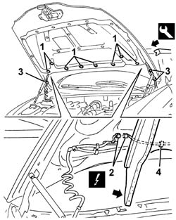
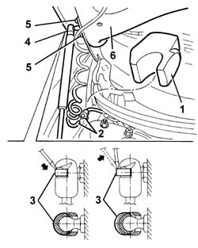

7210E20 R.R. BONNET LID
- Path
- Procedures > 72 PANELS AND FRAME > 7210 REMOVING REFITTING > 7210E EXTERNAL PARTS > 7210E20 R.R. BONNET LID
- Kind
- repair procedure (removal / refitting; the operation number is the code)
- Applies to
- all engines; all production periods
- Interactive page
- https://sloeber94.github.io/elrnDB-aGt/en/#/125002029
Applies to: all engines; all production periods
 Removing
Removing
 Refitting
RefittingOpen the bonnet lid.
1. Using the special tool, release the sound insulation lining retaining buttons shown.
 | Name | Country |
|---|---|---|
1 | Scraper blade | 1.823.015.000 |
2. Lift the sound insulation lining slightly and disconnect the heated windscreen washer jet electrical connections (2a, 2b).
Name | Connector | |
|---|---|---|
2a | Left windscreen washer jet defrosting resistance | See O50 LEFT WINDSCREEN WASHER JET DEFROSTING RESISTANCE ( FRONT ) |
Name | Connector | |
|---|---|---|
2b | Right windscreen washer jet defrosting resistance | See O51 RIGHT WINDSCREEN WASHER JET DEFROSTING RESISTANCE ( FRONT ) |
3. Cut the pipe and wiring retaining collars.
4. Disconnect the wiring retainers from the collar.

Applies to: all engines; all production periods
1. Remove the right sound-proofing
2. Disconnect the washer pipe connection.
3. Support the bonnet lid and, using a screwdriver, prise off (without detaching) the lift device upper retaining clips.
4. Disconnect the top retaining end of the lift devices.
5. Undo the hinge bolts.
6. Remove the bonnet.

Applies to: all engines; all production periods
Refitting
RemovingCheck that the bonnet and hinges are undamaged.
Fit the bonnet.
Screw in the hinge bolts without tightening them.
Connect the top retaining ends of the lift devices and fit the retaining clips.
Connect the washer pipe connector.
Fit the sound-proofing in its seat.
Connect the wiring retainers to the cover
Apply the retaining collars to the pipe and wiring.
Slightly raise the sound-proofing trim and connect the hot washer jet electrical connections.
Fit the soundproofing trim and do up the retaining buttons.